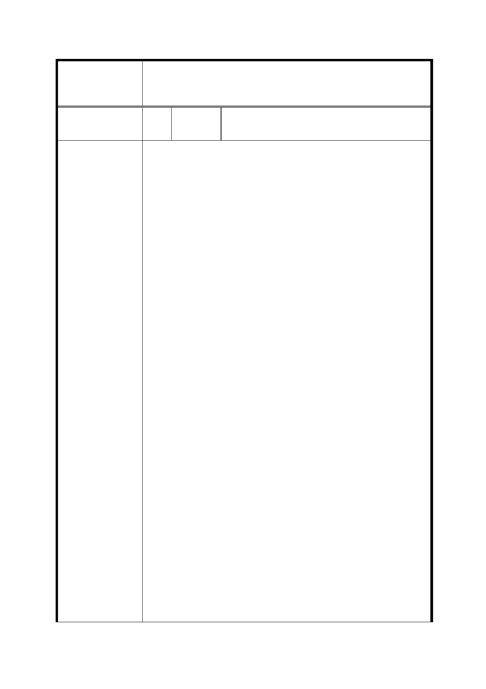

修訂「變 更臺北市文山區景美溪左岸（萬壽橋至道南橋間）
案 名 機關用地、公園用地、道路用地為第三種住宅區、道路用
地、公園用地細部計畫案」內有關重劃規定事項案
編
號 18
陳情人
財團法人台北市華亞之聲社中華基督教
便以利教會
主旨：修訂「變更臺北市文山區景美溪左岸（萬壽橋至道
南橋間）機關用地、公園用地、道路用地為第三種住宅區、
道路用地、公園用地細部計畫案」內有關重劃規定事項內
容，影響本教會所屬土地權益甚鉅，為於本教會內充分溝
通以形成共識，提請展延旨揭事項意見提出截止日至本年
6 月 30 日，請查照。
說明：
一、 依據民國 103 年 5 月 6 日府都規字第 10332000700
號公告之旨揭事項，指出「本計畫區南側之政大段
四小段 350-1 地號土地（約 312 平方公尺）劃出本
案重劃範圍，其後續開發建築應負擔回饋，回饋比
率不得低於本重劃案總平均負擔比率，且後續開發
建築時，應於領得使用執照前辦理回饋，該回饋方
式得經本府同意改繳納回饋代金方式為之。」本教
會正式意見容後提出，今僅以初步之回應意見如
下：
1. 依照市地重劃實施辦法第二章重劃地區之選定與公
告禁止事項第 7 條規定，重劃地區範圍應儘量配合都
陳情理由
市計畫之閭鄰單位辦理，其邊界並應依下列原則劃
定：（1）明顯之地形、地物。（2）非屬整個街廓納入
重劃區者，依街廓分配線。第 350-1 號土地被劃入該
重劃區係已違反上列規定之原則，故第 350-1 號土地
不列入重劃範圍內，值得肯定。
2. 惟按旨揭細部計畫，第 350-1 號土地既經剔除於重劃
範圍內，其回饋應以未來開發建築時之細部計畫規範
為之，且需考量個案因素予以調整。
二、 經本教會所請，厲耿桂芳議員協助於 103 年 5 月 30
日假台北市議會召開協調會，除討論前項議題外，
亦就下列本教會所提議題委請市府各機關研議，尚
請儘速回覆本教會，以提供本教會回應旨揭事項之
參考所需。
1. 本教會所屬第 348、349、349-1、351-1 等地號土地
列入重劃範圍，其面積共計 150 平方公尺，扣除負擔
比例（至少 51.6 %）之後，所剩面積未及 72 平方公
尺（約 21.8 坪）。若無法與其他地主合作開發，影響
本教會權益甚大。貴府土地開發總隊已於前述會議中
口頭同意於今年六月十五日前協調本教會與其他地
主之合建事宜，尚請儘速安排。
第 - 12 - 頁，共 20 頁